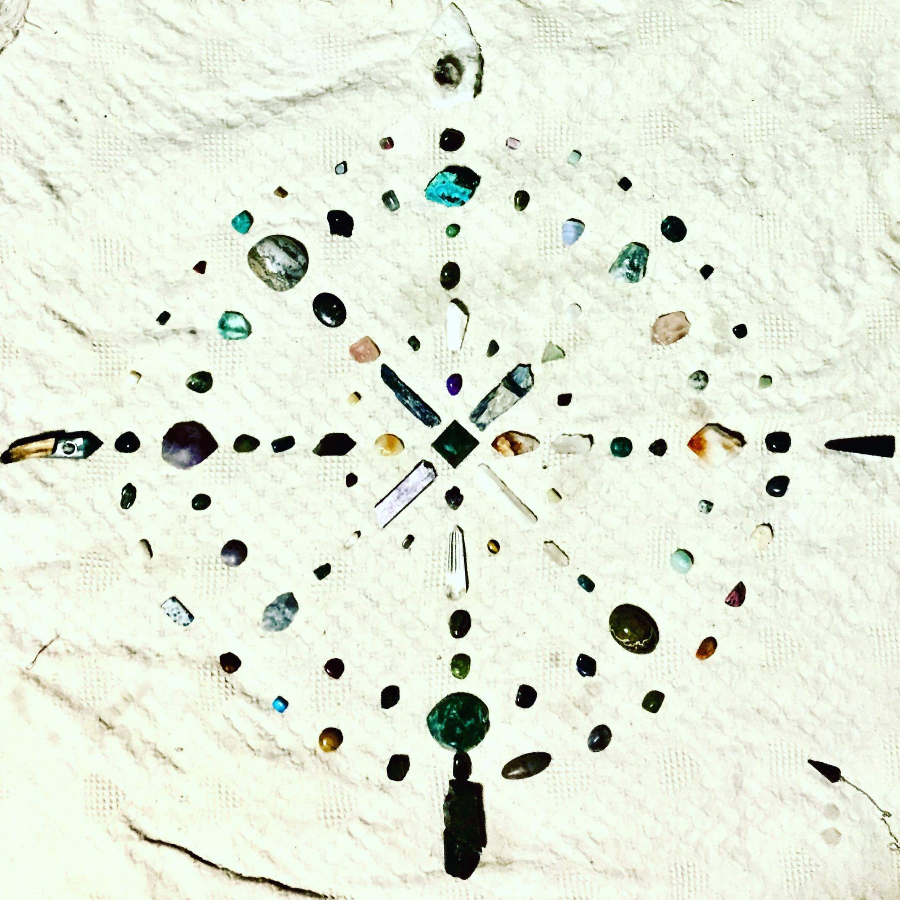

The many benefits of meditation can be grouped into two categories. In the first, we find all of the improvements to our health and general well-being that mindfulness is known for, including stress reduction, improved focus and resilience.
The benefits in the second category are more subtle. Thanks to awareness meditation, we gain insights into how the mind works. These insights open the heart and enable us to work with the mind in a more skillful, positive way that benefits ourselves and others.
 Mindfulness practice has received a lot of scientific attention and positive press in recent years due to the many health benefits of meditation. Studies have shown that sitting mindfully for a period of time each day can lead to more calmness and mental stability, increased focus, ability to concentrate, attention to details and productivity. Less emotional distress, anxiety and stress better sleep. In sum, people who practice regularly find that mindfulness contributes to an overall sense of well-being, capability and contentment.
“There are only two ways to live your life. One is as though nothing is a miracle. The other is as though everything is a miracle.” ~Albert Einstein
The phone booth in the middle of the desert with a sign that said:
"Talk to God"
was a surreal sight indeed. The idea was that you picked up the phone, and God—or someone claiming to be God—would be at the other end to ease your pain.
So when God came on the line asking how he could help, my friend was ready. "How can I live more in the moment?" he asked. Too often, he felt, the beautiful moments of his life were drowned out by a cacophony of self-consciousness and anxiety. What could he do to hush the buzzing of his mind?
"Breathe," replied a soothing male voice.
My friend flinched at the tired new-age mantra, then reminded himself to keep an open mind. When God talks, you listen.
"Whenever you feel anxious about your future or your past, just breathe," continued God. "Try it with me a few times right now. Breathe in... breathe out." And despite himself, my friend began to relax.